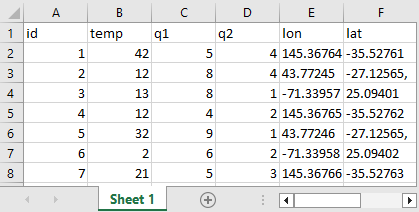

The file "{{ input.dataset.fileName }}" have errors:
- row {{ e.row }} {{ e.message }}
Document your datasets by providing basic variable descriptions.
Nectar Publisher works offline and can be downloaded as a zip-file
Import datasets
The first row in the .csv/.tsv or spreadsheet (.xlsx/.xls/.ods) file should be the name of the column.
Example:
